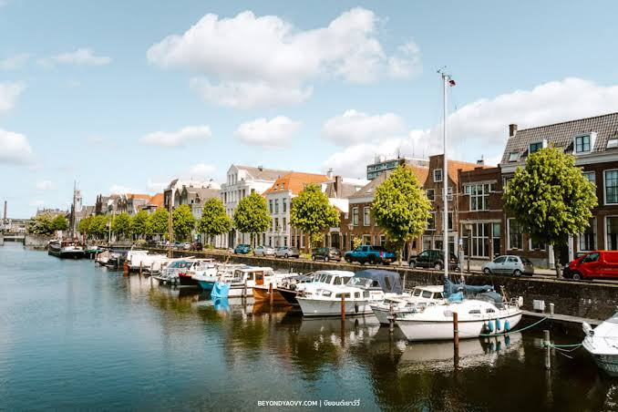

ลักษณะเส้นทาง เส้นทางนี้เป็นส่วนหนึ่งของ "เส้นทางสายไหมสายเหนือ" ในอดีต และถูกพัฒนามาเป็น "เส้นทางสายไหมทางรถไฟ (New Silk Road / Iron Silk Road)" ในยุคปัจจุบัน เส้นทางบกตัดผ่านที่ราบยุโรปเหนือ เริ่มจากท่าเรือใหญ่ของยุโรปอย่างร็อตเตอร์ดัม ผ่านเยอรมนี โปแลนด์ เบลารุส เข้าสู่กรุงมอสโก ซึ่งเป็นหัวใจสำคัญในการเชื่อมต่อไปยังคาซัคสถานและทะลุออกสู่ประเทศจีน (ซีอาน) เส้นทางนี้ช่วยย่นระยะเวลาการขนส่งระหว่างยุโรปและเอเชียได้เร็วกว่าทางเรือกว่าเท่าตัว เมืองและชุมทางสำคัญ Rotterdam (ร็อตเตอร์ดัม - เนเธอร์แลนด์): ท่าเรือที่ใหญ่ที่สุดในยุโรป จุดเริ่มต้น/สิ้นสุดการกระจายสินค้าทางทะเล Duisburg (ดุยส์บวร์ก - เยอรมนี): ท่าเรือบกและสถานีรถไฟขนส่งสินค้าที่ใหญ่ที่สุดในโลก ศูนย์กลางโลจิสติกส์ยุโรป Warsaw (วอร์ซอ - โปแลนด์): ประตูสูยุโรปตะวันออก จุดเปลี่ยนถ่ายและตรวจสอบสินค้า Moscow (มอสโก - รัสเซีย): ศูนย์กลางทางเศรษฐกิจของยูเรเชีย ชุมทางรถไฟสายทรานส์-ไซบีเรีย และสายไหมยุคใหม่ สินค้าที่แลกเปลี่ยน จากร็อตเตอร์ดัม (ยุโรปตะวันตก): เครื่องจักรกลและเทคโนโลยีขั้นสูง ชิ้นส่วนยานยนต์และรถยนต์หรู เวชภัณฑ์และเคมีภัณฑ์ สินค้าเกษตรและอาหารแปรรูปแช่เย็น

การแลกเปลี่ยนวัฒนธรรม มอสโก (และรัสเซีย) ได้รับอะไรจากยุโรปตะวันตก สถาปัตยกรรมและการผังเมืองแบบตะวันตก จักรพรรดิรัสเซีย (เช่น ปีเตอร์มหาราช) นำเข้าสถาปนิกและวิศวกรจากเนเธอร์แลนด์และอิตาลีไปสร้างเมืองและวัง ส่งผลให้พระราชวังในมอสโกและเซนต์ปีเตอร์สเบิร์กมีกลิ่นอายแบบยุโรปตะวันตก นวัตกรรมเรือและการเดินเรือ พระเจ้าปีเตอร์มหาราชเคยปลอมตัวไปศึกษาดูงานการต่อเรือที่เนเธอร์แลนด์ (ซึ่งร็อตเตอร์ดัมเป็นศูนย์กลาง) และนำความรู้นั้นกลับมาสร้างกองทัพเรือรัสเซีย วิถีชีวิตและแฟชั่นระดับสูง การนำเข้าเสื้อผ้า เครื่องแก้ว ไวน์ และขนบธรรมเนียมแบบราชสำนักฝรั่งเศสและดัตช์เข้าสู่สังคมชั้นสูงของรัสเซีย ยุโรปตะวันตกได้รับอะไรจากมอสโกและยุโรปตะวัน東 อิทธิพลด้านศิลปะและวรรณกรรม ความรุ่งเรืองของวรรณกรรมรัสเซีย (เช่น ตอลสตอย, ดอสโตเยฟสกี) และดนตรีคลาสสิก/บัลเล่ต์รัสเซีย แพร่กระจายกลับสู่ยุโรปตะวันตกผ่านเส้นทางแลกเปลี่ยนนี้ การเรียนรู้ภูมิศาสตร์และวิทยาศาสตร์ธรรมชาติ นักสำรวจชาวยุโรปตะวันตกใช้มอสโกเป็นฐานในการเรียนรู้และทำแผนที่ดินแดนไซบีเรียอันลึกลับ และศึกษาพันธุ์พืช-สัตว์ในเขตหนาว วัฒนธรรมการดื่มและการถนอมอาหาร การแพร่หลายของเครื่องดื่มประเภทวอดก้า และเทคนิคการถนอมอาหารในฤดูหนาว (เช่น การดองและรมควันแบบสลาฟ) เข้าสู่ยุโรปตะวันตก